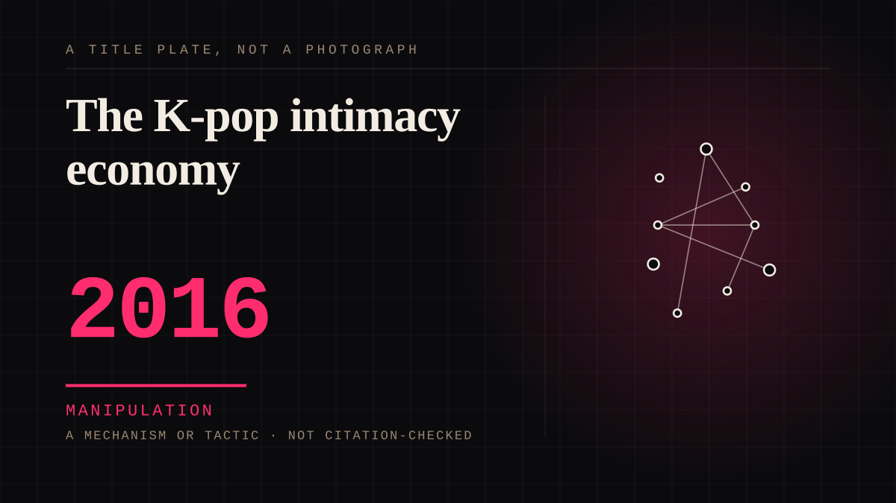

A mechanism or tactic · 2016 · Assembled fandom
The K-pop intimacy economy
Idol apps, paid messaging, fan-owned content, fan-voted releases, anniversary features, and a fandom documented and researched as a business model.

The first time the parasocial bond was not just monetised but studied, by both the industry and academics, and openly discussed by the fans themselves. Fans who know they are inside a mechanism are still inside it.
Manipulation. One-sided attachment engineered for somebody else's benefit. Paid intimacy, parasocial persuasion, sasaeng, grief extraction, the streak. The lane that pays the bills and the lane that causes the most harm, frequently at the same time.
Application. One-sided attachment put to work on purpose. Creator economies, community, fandom as infrastructure, and the things that genuinely help people. Not automatically good - a tool with an obvious use is a tool that will also get a bad one.
Same story, 6 other entries
The protagonist is a parasocial object1939 → Parasocial interaction1956 → Parasocial interaction disorder1985 → Parasocial persuasion2015 → Consent in one-sided attachment2020 → A glimpse mistaken for access2026
Where it sits
2010 2010+ · 2016 2026
Provenance · 1 source record(s)
- needs-sourceNo specific claim is recorded against this source. The record is a pointer to the work in general; the entry's own prose is the argument and is not sourced line by line.No single source identified yet; this entry needs its series added.
Connected · 3 out, 3 in
Reported as a story
It sits in